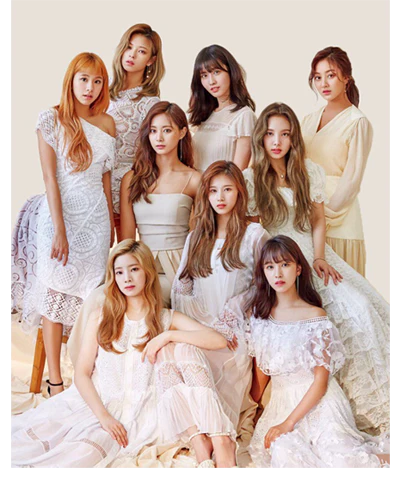

TWICE
Years Active: 2015–present
Genre/s: K-pop, J-pop, bubblegum pop, dance-pop, EDM
Label/s: JYP, Warner Japan, Republic
Members: Nayeon, Jeongyeon, Momo, Sana, Jihyo, Mina, Dahyun, Chaeyoung, Tzuyu
Member of: JYP Nation
Twice (Korean: 트와이스) is a South Korean girl group formed by JYP Entertainment. The group is composed of nine members: Nayeon, Jeongyeon, Momo, Sana, Jihyo, Mina, Dahyun, Chaeyoung, and Tzuyu. They are recognized as one of the best-selling girl groups of all time and are widely regarded as one of K-pop's most influential acts. Twice have been dubbed "The Nation's Girl Group" in their home country and are credited for their role in leading the re-emergence of girl groups in the Korean Wave. Initially known for their cute and bubbly image, the group has since evolved to explore darker, more mature, and elegant concepts.
Twice was formed under the television program Sixteen (2015) and debuted on October 20, 2015, with the extended play (EP) The Story Begins. They rose to domestic fame in 2016 with their single "Cheer Up", which charted at number one on the Gaon Digital Chart, became the best-performing single of the year, and won "Song of the Year" at the Melon Music Awards and Mnet Asian Music Awards. The group's next single, "TT", from their third EP Twicecoaster: Lane 1, topped the Gaon charts for four consecutive weeks. The EP was the highest selling Korean girl group album of 2016. Within 19 months after debut, Twice had already sold over 1.2 million units of their four EPs and special album. As of 2022, the group has sold over 14 million albums cumulatively in South Korea and Japan.
The group debuted in Japan on June 28, 2017, under Warner Music Japan, with the release of a compilation album titled #Twice. The album charted at number 2 on the Oricon Albums Chart with the highest first-week album sales by a K-pop artist in Japan in two years. It was followed by the release of Twice's first original Japanese maxi single titled "One More Time" in October. Twice became the first Korean girl group to earn a platinum certification from the Recording Industry Association of Japan (RIAJ) for both an album and CD single in the same year. Twice ranked third in the Top Artist category of Billboard Japan's 2017 Year-end Rankings, and in 2019, they became the first Korean girl group to embark on a Japanese dome tour.
Twice is the first female Korean act to simultaneously top both Billboard's World Albums and World Digital Song Sales charts with the release of their first studio album Twicetagram and its lead single "Likey" in 2017. With the release of their single "Feel Special" in 2019, Twice became the third female Korean act to chart into the Canadian Hot 100. After signing with Republic Records for American promotions as part of a partnership with JYP Entertainment, the group achieved five top-ten albums on the US Billboard 200 and topped the chart in 2024 with their thirteenth extended play With You-th. Their first official English-language single, "The Feels" (2021), became their first song to enter the US Billboard Hot 100 and the UK Singles Chart, peaking at the 83rd and 80th positions of the charts, respectively. Their point choreography—including for "Cheer Up" (2016), "TT" (2016), "Signal" (2017), and "What Is Love?" (2018)—became dance crazes and viral memes.